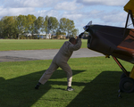
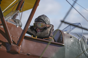

Trial Flights
Payment via PayPal is under construction.
In the meantime, please contact us to purchase trial flight vouchers directly.
To redeem a voucher contact alison@tigermothacademy.co.uk.
We will contact you by e-mail to discuss when you would prefer to fly, and where you are travelling from.
This helps us to plan the best possible time for your flight.
We must also ask you about your height and weight: this helps us provide a suitable flying suit and balance the aircraft.


On Arrival
On arrival at Breighton Airfield you will be met by a member of the team.
They will assist you into a flight suit, then your pilot will run through a pre-flight briefing.
You will be fitted with a headset to enable inflight communication with your pilot.
Airfield Location
Flight Plan
A flight plan will be agreed before takeoff: Breighton is ideally placed for a number of different options.
A half-hour flight might incoporate a flight over York.
Castle Howard, stunning from the air, takes an hour.
Other options include the Humber Bridge, Flamborough Head, or even your own home!
At the Airfield
There is ample parking and a viewing area for your friends and family.
A café is available at the weekend for light lunches, snacks and cake as well as hot and cold drinks.
Conditions Permitting
For your safety, a member of the team may decide not to fly, or to return early, at any time and for any reason.
The most common reasons for cancellation are poor weather and unscheduled maintenance.
We will endeavour to inform you as soon as possible, but we ask for your understanding as we operate a piece of history.
Of course, your vouchers remain valid in the event of our cancellation and we will reschedule your flight.